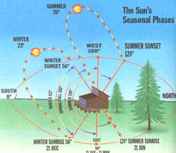

Energy And Environment
We take the sun for granted as it lights, warms and measures our lifetimes in precise 24-hour segments. This free, high-quality light and its attendant energies can enhance our lives by the manner in which it interfaces with the various structures we inhabit. This light-space relationship has reached a critical, often unrecognized importance during the last century as most of us have moved indoors in the workplace.
In the past the sun was taken more seriously with the best body of "solar law" belonging to the ancient Romans. In their cities, they carefully controlled building size and location to enable each space to receive its maximum ration of light and heat. In America, most farmhouses in the early colonies were oriented with the long wall facing the sun's benefits. By the mid 1800s we began to forget the sun's benefits. The mass production of cast iron wood stoves in Troy and Albany, NY worked so well as a heater that a home's position to the sun seemed virtually unimportant. The common use of the light bulb found us further from the need to properly employ the sun.
Today, over two decades removed from the 1970s' energy crisis, we are again returning to the solar knowledge our forefathers embraced. The sun is even available to most suburban and rural homes which may not have one wall oriented near south. To determine the "solar window" of the structure in question for its potential to deliver energy to the inner spaces, check your own shadow at noon standard time (1 P.M. if it is daylight savings time) and find solar south to be opposite your north body shadow. If one wall or a portion of your structure is within +/-10 degrees of this, you have good orientation. You will have a nearly desirable situation, however, if the wall with the most windows is within 30 degrees of solar south (beware of westfacing glass, as the summer sun, low in the sky from June-Sept at 5:30 - 8:30 P.M., can lead to overheating).
How do we use this basic knowledge of your own "solar window" to best enhance the home' s energy efficiency? There are a number of inexpensive steps that one can apply to every structure to substantially improve it's performance.
First: Remove the largest north-facing window possible as it always loses energy. Most homes can afford the loss of one or more non-sunny windows with the wall that replaces it insulated (R12-R20) much better than the window (R1-R4).
Second: Install a larger south-facing window or enlarge one or more existing units. Remember, the sun needs to "see" those windows for the majority (5-6 hours) of the day. Choose windows having modern high-efficiency glass rated at R3R4, and in most cases they can be non venting Axed units because the typical home already has enough venting windows. You now have the opportunity to receive up to 250 Btu's per sq. ft. per hour at midday ...free. For six hours facing near south during winter in the northern United States, the average availability will be 175 Btu's per sq. ft. Each 10 sq. ft. of glass which will transmit about two-thirds of this energy will therefore yield 700 free Btu' s to your space on a sunny day in addition to the daylighting benefit. The value of this energy can be compared to one thousand watts of electric heat, or 1 kilowatt, which for one hour yields 3414 Btu's and costs from 10-20 cents, depending on where you are. This does not count the fact that a window would probably also reduce lighting electrical usage. A 100-watt bulb burning for 10 hours also uses a kilowatt.
Third: Increase insulation values. The concept here is to upgrade the R value (resistance to energy flow) of various parts of your home's outside surfaces. The most popular type of insulation is fiberglass, but without proper installation techniques, its performance at mid-winter is one-half or less of the claimed value. Evidence of this is starkly visible in all northern locales as you observe the huge icicles and roof ice dams. This often occurs despite fiberglass insulation with R24 or R30 claims. You must become aware of the proper installation methods involving an understanding of ventilation and moisture movement in tight spaces. The "correct job" is often hard or impossible to achieve in retrofitting. My general advice is to use one of the foam sheet insulations (2' x 8' - 4' x 8' etc.) purchased on the unit pricing principle of cost per installed R value. Generally foil faced urethanes (polyisocyanurate) or Styrofoam are best.
One would first retrofit the north roof, paying particular attention to making sure the roof covering (whether it is shingle, tile, slate, or any other surface) is secure and contains no openings to the insulation housing beneath. Next in priority would be the northern wall(s), and final the south roof and walls. As you proceed, replace all windows with modern units having R values of at least 3 to 4, which usually have their perimeter cracks foamed with a non-expanding spray foam. Remember, the most essential part of insulating is the attendant sealing of all gaps, wires and other penetrations with a high quality caulk.
One must at the same time insulate the portions of the walls or foundation below the siding typically left undone in the past. Why would you want your house to be barefoot in winter? One should dig up the foundation as far down as possible and install the foam insulation (at least R8-19) with an outside-quality waterproof membrane before backfilling. This may offer a highly recommended opportunity to install better drainage to daylight than the typical home received at its origination. You can complete this foundation insulation job by covering the outside surface from 6" - 8" below grade up to the bottom of the siding with 3/8" pressure-treated plywood or other weatherproof skirting material.
Finally, one must upgrade the basement or crawl-space and make a serious effort to shut off ground water and, more importantly, the invisible movement of ground moisture as water vapor into the home. Even the best insulated modern homes, which are reasonably insulated as required by code on 5 sides of their "box," fail to close themselves off from ground moisture. The vast majority of homeowners spend a goodly portion (5-10%) of their heating and cooling budget trying dry out the ground under their house Mid never succeed. You could test yowl own home during winter conditions by placing a 10-15 square foot piece of a vapor barrier over your concrete basement floor or crawlspace dirt and you will observe with in a day water droplets on its earth sick. Many methods are available to mitigate this undesirable moisture movement. It your basement is usually dry and crack free, you can apply one of the quality liquid surface treatments designed waterproof the concrete. A crawl-space can be fixed by installing a large piece of Flatic vapor barrier everywhere, and carefully sealing all penetrations with the edge held in place by weights such as bricks or pressure-treated wood scraps. Older, uneven rock-lai d or degraded basements will need further, more extensive efforts.
Fourth: The previous reasoning with windows its solar collectors also applies toy new or existing doors with glass placed (oil sunny exposures. That old wooden door was a 40-60 lb. object that you slammed a few thousand times each year and still had expectations of it's sealing tightly. The old saying that such doors were so poorly scaled that "you could throw a cat through them" is not as ridiculous as you might think. Modern doors with urethane core insulation, steel or fiberglass facings and the latest insulated glazing are a huge improvement over the older wooden door. The major improvement is in their sealing, on roughly 20 linear feet of perimeter crack with a deformable or magnetic gasket These doors are one of your best retrofitting buys as they reduce air leakage to a small percentage of the average door that they replace.
Since the average structure has a large portion of its energy losses from air movement through many unsealed cracks and openings, we need to make a concerted effort to tackle them. One needs to consider both in-filtration and ex-filtration of air, both driven by the obvious causes of the wind with attendant door and window crack leakage. Those air leaks are in fact driven in larger part by unrealized factors such as door operation, vent fan operation and barometric pressure changes. Additionally, perhaps the most common leakage is one caused by air expanding as we heat it. During an average winter, the interior air will need to be heated an average of 50°F. As the air heats, it expands, and requires that much more prevention from escaping. Sealing of the myriad gaps beyond that of window and door openings and their frame cracks involves a careful examination of your home's complete exterior. A good place to start is the clothes-dryer vent. Typically these vents are a perfect example of how not to insulate an opening, with its skimpy aluminum flapper. Purchasing a substantial plastic replacement with a vertical outlet capped by an upside-down can would be a tremendous start. The can is simply lifted off its pipe during operation and closed by gravity. Other fan vents should also be checked and improved where possible. The last vents to check would be those that service the attic space above your insulation, as they may well be too small for the job. Check the latest information on venting above insulation, and upgrade yours accordingly.
Purchase some high-quality caulk (latex, silicone or one component urethane as appropriate) and relentlessly pursue a crack-sealing mission. It is one of the most effective expenditures you'll ever make. Don't overdo it; more isn't necessarily better, just be sure the caulk makes it well into the confines of the small crack or space to be sealed. Heating the tube in warm water to 100-110°F often helps its flow rate. Use an old sock with a hole in its toe to cover the tube to keep it warm. Gaps wider than 3/16" - 1/4" should be sealed with a one-component spray foam.
Fifth: Tackle the reduction of heating and cooling costs that are beyond the obvious tune-art, of your mechanical equipment and major exterior gaps. A start is to follow the common regimen used earlier in the century of closing drapes and curtains to exclude heat or cold. More to the point is a reduction of solar gain in summer which can be at its peak after 2 pm through southwesterly or western windows. Fortunately, the awning industry has returned in most parts of our land and the outside application of shading combined with the use of a whole house fan getting its air from the non-sunny side, can go a long way toward naturally cooling your space. Daily reductions of 8-10°F are easily possible with just this method. A large maple tree planted in the appropriate western space can be nearly as effective. It is best to manage energy gains or losses on the surface you are trying to control. While outside devices work best for excluding summer's heat, inside insulation work best to keep heat in.
Consider insulating the inside of some of your non-sunny windows. It may be possible to forgo a few windows (in a closet or seldom-used room) for the winter. An inexpensive all-season insulation can be a piece of 1/2-1" rigid foam, tightly fitted inside the window, and left from Nov.-March. This same foam can be backed with a thin piece of old paneling or plywood and covered with cloth to be made more attractive; or if you feel the sacrifice of the window would be too drastic, then install the foam on Sunday night and remove it Saturday morning, or use it on a nightly basis. If you are keen to combine recycling with budget retrofitting, you could use "bubble-pack" or "foam packing peanuts," to loosely fill plastic bags. Use the bags as fillers between the storm window or door and the main unit. Remember not to violate proper fire exit routes in the process, and keep in mind that many of these materials are flammable. In order to install inside window insulation, you'll need to do better than the typical drape, curtain or shade of the past. The modern approach must involve a device that is sealed at all edges, as one of the most important part of the insulation package is the air trapped between the device and the window.
Good luck to you on your management of all errant Btu's.
|
 |
|
|